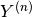
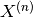
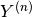
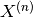
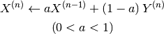
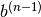
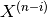
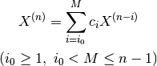

8. 基底状態計算¶
8.1. 計算方法¶
計算対象の電子配置に基づき、ProteinDFでは閉殻・開殻・制限付き開殻計算が実行できます。 キーワード method で指定します。
8.2. 電子数・電子占有状態の指定¶
8.2.1. 制限法計算(restricted Kohn-Sham method)¶
1つの分子軌道に1組の電子対を配置する閉殻分子(一重項)の計算を行います。 method = rks を指定してください。
キーワード method/rks/occlevel で電子の電子配置を指定します。 例えば、10個の電子が対になってエネルギーの低い5つの軌道を占有する場合、
method/rks/occlevel = [1 - 5]
と記述してください。最も低い分子軌道が1番となり、順に、2、3、・・・と続きます。
また、電子数はキーワード rks/electrons で指定します。 10個の電子であれば、
rks/electrons = 10
と記述します。
ノート
閉殻計算の場合、 rks/electrons の値は必ず偶数になります。
ノート
method/rks/occlevel = [1-4, 6] というような記述もできます。 このとき、1番目の軌道から4番目の軌道まで、そして6番目の軌道に電子が占有されます。
8.2.2. 非制限法計算(unrestricted Kohn-Sham method)¶
αスピン、βスピンそれぞれの電子配置が異なる開殻分子の計算を行います。 method = rks を指定してください。
それぞれの電子数は、αスピンは uks/alpha_electrons 、βスピンは uks/beta_electrons で指定します。 電子配置は同様に method/uks/alpha-spin-occlevel 、 method/uks/beta-spin-occlevel で指定します。
警告
uks/alpha_electrons の値は uks/beta_electrons と等しいか、それよりも大きくなるようにしてください。
8.2.3. 制限開殻計算(restricted open shell Kohn-Sham method)¶
閉殻電子配置(closed-shell)と開殻電子配置(open-shell)に分けて計算する手法です。 method = roks を指定してください。
電子数は method/roks/closed_shell_electrons 、 method/roks/open_shell_electrons で指定し、 電子配置は method/roks/closed_shell_occlevel 、 method/roks/open_shell_occlevel で指定します。
8.3. 初期値の指定¶
SCF繰り返し計算における初期値を指定します。 キーワードは guess です。
8.3.1. core¶
コアハミルトニアンを使って初期値を作成します。 guess = core で使用できます。
8.3.2. Hückel¶
Hückel法により初期値を作成します。 guess = huckel で使用できます。
8.3.3. Harrisの汎関数¶
Harrisの汎関数を用いて初期値を作成します。 guess = harris で使用できます。 原子種によっては用意されていない場合があります。
8.3.4. 近似電子密度¶
近似電子密度を用いて初期値を作成します。 guess = rho で使用できます。 RI法以外では正しい結果が得られない場合があります。
8.3.5. LCAO係数行列¶
LCAO係数行列から初期値を作成します。 guess = lcao で使用できます。 あらかじめLCAO係数行列を用意しておく必要があります。
ノート
現行のバージョンでは、計算ディレクトリにLCAOテキストファイル、OCCテキストファイルを用意しておく必要があります。 この仕様は今後変更される可能性があります。
8.3.6. 密度行列¶
密度行列を初期値として利用します。 guess = density で使用できます。 あらかじめ密度行列を用意しておく必要があります。
ノート
現行のバージョンでは、作業用ディレクトリ(fl_Work)下に0番目の密度行列ファイルを置く必要があります。 この仕様は今後変更される可能性があります。
8.4. クーロン項の計算¶
8.4.1. 計算エンジンの選択¶
クーロン項の計算で必要な4中心2電子積分は、 計算律速なルーチンの一つです。 ProteinDFでは、いくつかの計算エンジンを実装しています。 キーワード J_engine で選択できます。
8.4.1.1. conventional¶
SCF繰り返し計算の各イテレーションにおいて、 4中心2電子積分を計算し、クーロン項を求めます。
8.4.1.2. RI_J¶
SCF繰り返し計算の各イテレーションにおいて、 RI法に基づき、3中心積分を計算してクーロン項を求めます。 計算精度は補助基底関数に依存します。 ProteinDFのデフォルトです。
8.4.1.3. コレスキー分解法¶
コレスキー分解法に基づき、 SCF繰り返し計算の前に4中心2電子積分のコレスキーベクトルを求めます。 SCF繰り返し計算の各イテレーションでは、 密度行列との行列演算によりクーロン項を求めます。 SCF計算中に分子積分を行わないために高速に演算できますが、 メモリやディスクの記憶域を多く消費します。 J_engine = CD で使用できます。
8.5. Fock交換項の計算¶
8.5.1. 計算エンジンの選択¶
Fockの交換項も4中心2電子積分計算が必要なため、 計算律速になります。 キーワード K_engine で計算エンジンを選択できます。
8.5.1.1. conventional¶
SCF繰り返し計算の各イテレーションにおいて、 4中心2電子積分を計算し、クーロン項を求めます。 ProteinDFのデフォルトです。 K_engine = conventional で使用できます。
8.5.1.2. コレスキー分解法¶
クーロン項と同様に、コレスキー分解法によって Fock交換項を求めます。 クーロン項のコレスキー分解で求めたコレスキーベクトルを 共通して利用します。 K_engine = CD で使用できます。
8.5.2. ハイブリッド汎関数法およびHartree-Fock法¶
パラメータ xc-potential に以下の値を設定することで、 ハイブリッド汎関数計算、またはHartree-Fock計算を行うことができます。
HF
Hartree-Fock法による電子状態計算を行います。
B3LYP
Becke 3パラメータによるハイブリッド汎関数計算を行います。
8.6. 交換相関項の計算¶
ProteinDFにおいて、Kohn-Sham行列の交換相関項ならびに交換相関エネルギーは 数値積分計算、または解析計算(grid-free法)によって求めることができます。 デフォルトは数値積分計算です。
8.6.1. グリッドの選択¶
数値グリッドはパラメータ xc-potential/grid-type で指定できます。 デフォルトはSG-1グリッドを採用します。 詳しくは付録を参照してください。
8.6.2. 数値積分法で利用できる汎関数¶
汎関数の指定は xc_potential で行います。 利用可能な汎関数は以下のとおりです。
- SVWN~
- SVWN
- BLYP
- B3LYP
- HFB
ノート
末尾にチルダ(~)がある交換相関汎関数は、 RI法に基づき近似電子密度から交換相関項が求められます。
8.6.3. グリッドフリー法¶
グリッドフリー法による交換相関項計算を実行します。 詳しくは付録のキーワード grid_free を参照してください。
8.7. レベルシフト計算¶
レベルシフト法は特定の軌道について軌道エネルギーをずらすことができる計算手法です。 詳しくは付録のキーワード level_shift を参照してください。
8.8. 収束加速法¶
SCF繰り返し計算において、 安定かつ効率良く収束させるために、 ProteinDFではいくつかの収束アルゴリズムを選択できます。 キーワード scf_acceleration で選択できます。
8.8.1. damping法¶
前回の繰り返し計算で用いた物理量を一定の割合で混ぜ合わせる方法です。
 回目のSCF計算で求められた物理量を  と表し、
更新される量を  とすると、
以下のように求められます。
回目のSCF計算で求められた物理量を  と表し、
更新される量を  とすると、
以下のように求められます。

ここで、混ぜ合わせる割合( )は、
scf_acceleration/damping/damping_factor
で設定できます。
また、対象となる物理量は、
scf_acceleration/damping/damping_type
で指定できます。
)は、
scf_acceleration/damping/damping_factor
で設定できます。
また、対象となる物理量は、
scf_acceleration/damping/damping_type
で指定できます。
- 使用例
scf_acceleration/damping/damping_factor = 0.85
scf_acceleration/damping/damping_type = density_matrix
8.8.2. Anderson法¶
Andersonによる2次収束法を用います。 以下、過去2点の物理量を用いた場合の式を示します。
![X^{\left(n\right)}=u^{\left(n-1\right)}+b^{\left(n-1\right)}\left(v^{\left(n\right)}-u^{\left(n-1\right)}\right)
u^{\left(n-1\right)}=X^{\left(n-1\right)}+\theta^{\left(n-1\right)}\left(X^{\left(n-2\right)}-X^{\left(n-1\right)}\right)
v^{\left(n\right)}=Y^{\left(n\right)}+\theta^{\left(n-1\right)}\left(Y^{\left(n-1\right)}-Y^{\left(n\right)}\right)
\theta^{\left(n-1\right)}=\frac{\left(r^{\left(n-1\right)},r^{\left(n-1\right)}-r^{\left(n-2\right)}\right)}{\left(r^{\left(n-1\right)}-r^{\left(n-2\right)},r^{\left(n-1\right)}-r^{\left(n-2\right)}\right)}
r^{\left(n-1\right)}=Y^{\left(n\right)}-X^{\left(n-1\right)}
\left(u,v\right)=\sum_{i}u_{i}v_{i}w_{i}](_images/math/ed94d372ad60da30d82583a9e620ea24233ea812.png)
上式  は、 scf-acceleration/anderson/damping-factor で指定できます。
なお、Anderson法を開始するまではdamping法を用います。 Anderson法を開始するSCF回数は、 scf_acceleration/anderson/start_number で指定できます。
8.8.3. DIIS法¶
Pulay によるDirect Inversion of the Iterative Subspace (DIIS)法を採用します。 DIIS法では、新しい物理量 は過去の  の 線形結合で得られると仮定します。

ここで、参照数  は scf-acceleration/diis/number-of-diis で指定します。
は scf-acceleration/diis/number-of-diis で指定します。
またDIIS法でも、DIIS法を開始するまではdamping法を用います。 DIIS法を開始するSCF回数は、 scf-acceleration/diis/start-number で指定します。